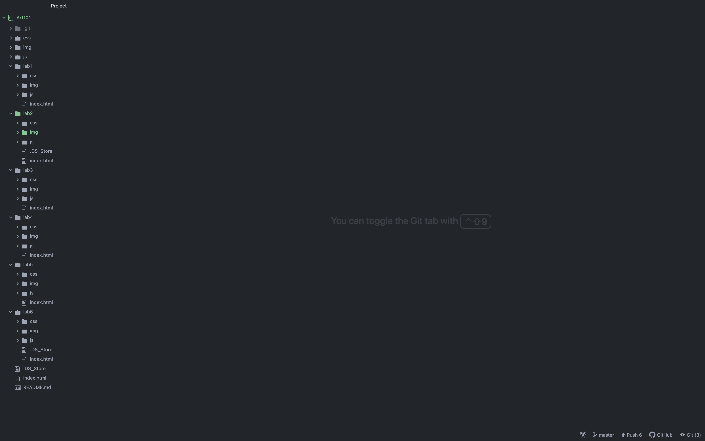
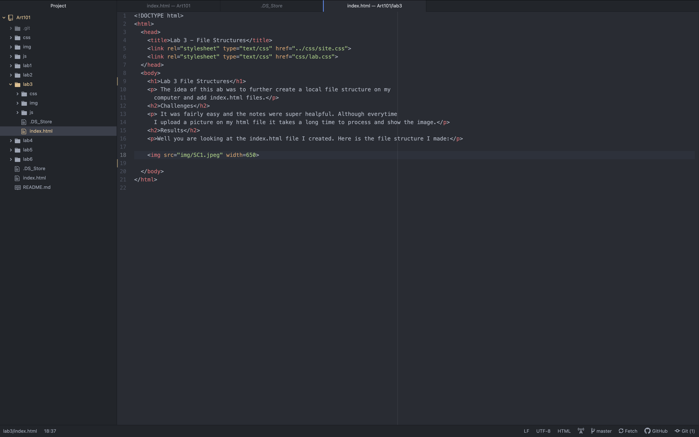
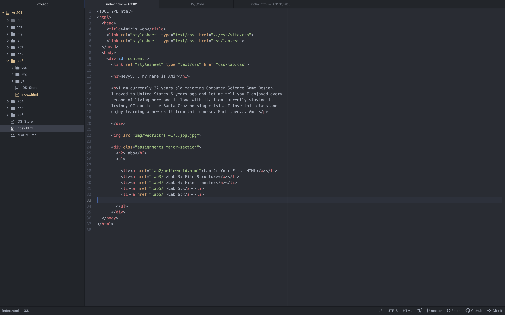

The idea of this ab was to further create a local file structure on my computer and add index.html files.
It was fairly easy and the notes were super healpful. Although everytime I upload a picture on my html file it takes a long time to process and show the image.
Well you are looking at the index.html file I created. Here is the file structure I made:
  